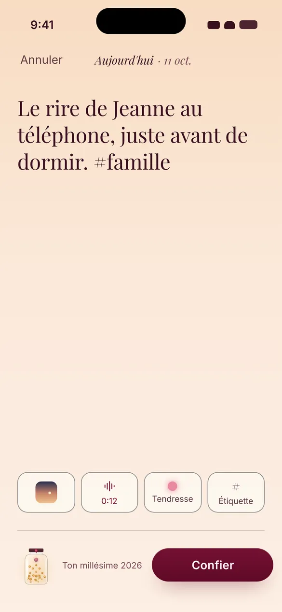
Chaque jour
Tu confies
Quelques mots, et si tu veux une photo, quinze secondes d’ambiance, une émotion. Dix secondes suffisent.
Confie un petit bonheur chaque jour, en dix secondes. Ton bocal reste scellé jusqu’au 31 décembre : ce soir-là, tu revis toute ton année, en mots, en images et en sons.
Et pour goûter la cérémonie dès ce soir, une année exemple t’attend dans Mes années.
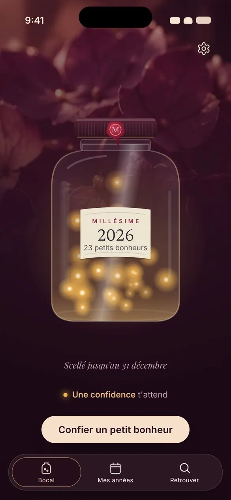
Millésime n’est pas un journal à relire chaque soir. C’est un rituel : un bocal qui se remplit sans qu’on y touche, et qui s’ouvre une fois par an.

Quelques mots, et si tu veux une photo, quinze secondes d’ambiance, une émotion. Dix secondes suffisent.
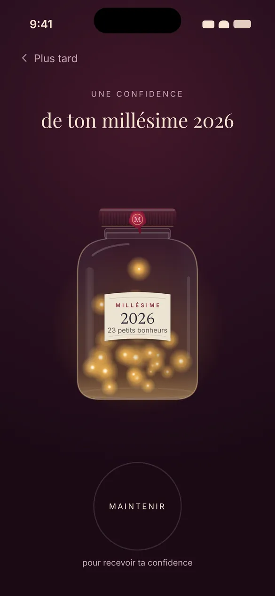
Ton bocal te confie un souvenir au hasard. Le reste t’attend.
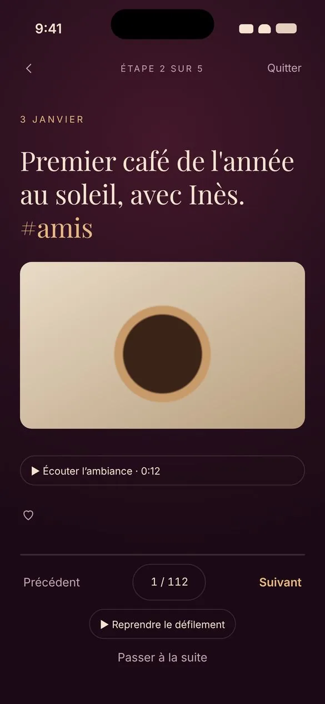
Ton année s’ouvre en un ciel de lumières, et tu la revis moment après moment. Tu choisis tes coups de cœur.
La cigale sous la fenêtre. Le rire d’une amie. La pluie sur la verrière.
Une photo montre, un son ramène. Des mois plus tard, tu fermes les yeux, et tu y es.
Tu gardes le doigt sur le bocal, le sceau se brise, et tes souvenirs s’envolent pour former un ciel de lumières. Un rire, la mer au loin, le bruit d’un café en terrasse : tu les revis un à un, puis ton année se compose en rosace.
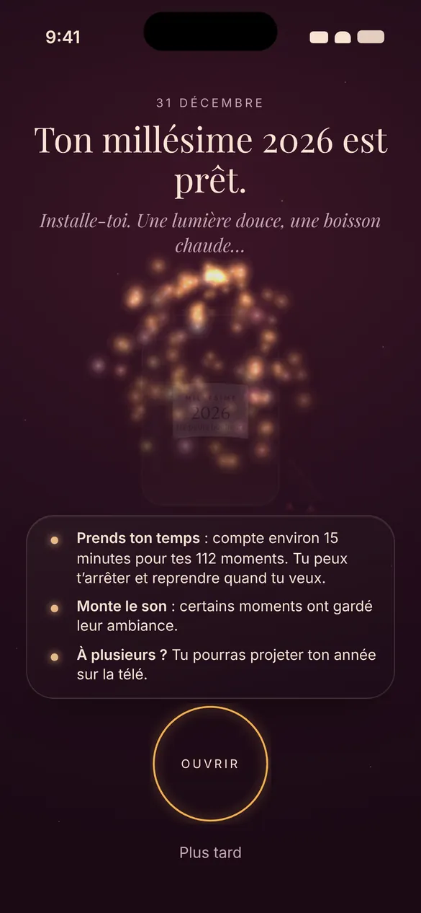
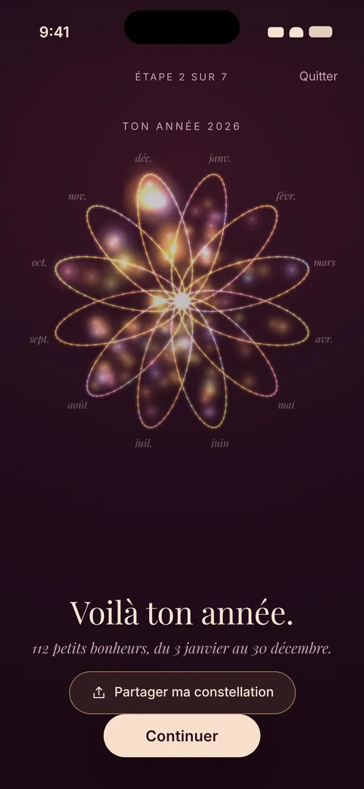
Le sceau se brise, tes souvenirs s’envolent en un ciel de lumières, puis ton année se compose en rosace. Extrait du prototype de l’app, avec une année d’exemple : aucun souvenir réel.
Donne un mot à ton année : il se pose sur l’étiquette de ton bocal. Puis ton millésime rejoint Mes années, et 2027 commence à minuit avec un bocal tout neuf.
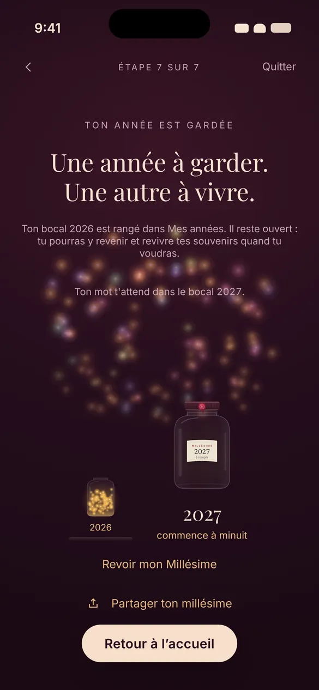
Ton bocal ouvert, partage la carte de ton millésime : la Lanterne, la Constellation ou l’Étiquette. L’année et ton bocal, jamais tes souvenirs. Si tu veux, le mot de ton année s’y ajoute.
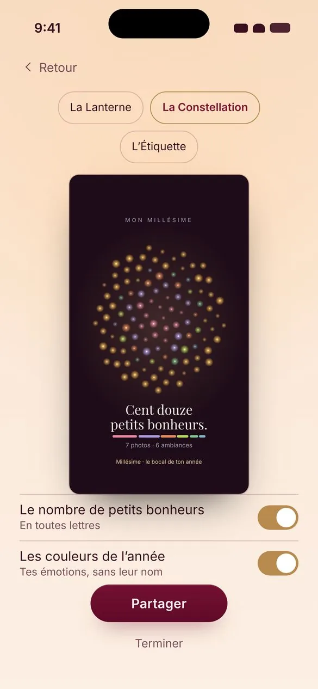
Chaque année ouverte se range dans Mes années, son bocal encore plein de lumière, avec le mot que tu lui as donné. Parcours-la par le calendrier, au fil des jours, ou par tes coups de cœur.
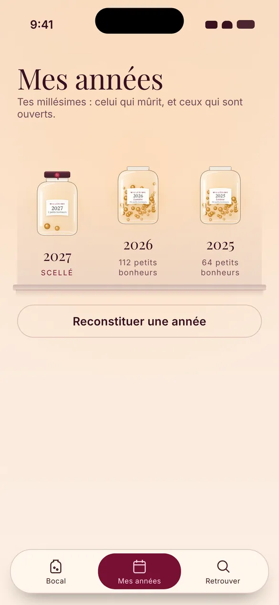
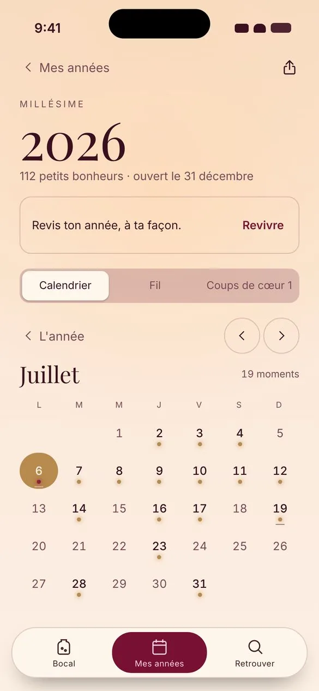
Tes souvenirs reviennent d’eux-mêmes. Cherche un mot ou une #étiquette dans toutes tes années ouvertes.
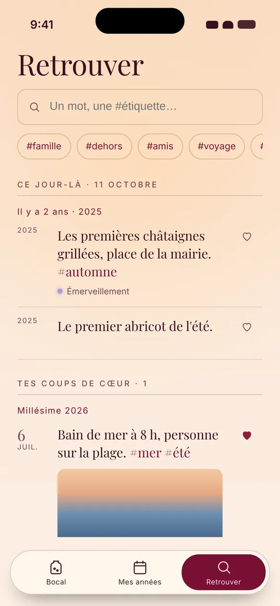
Un voyage, une rencontre, une première fois : reconstitue une année passée en quelques souvenirs, guidé pas à pas. Tes années se remplissent dès le premier jour, et celles-ci se revivent comme les autres, à ta façon.
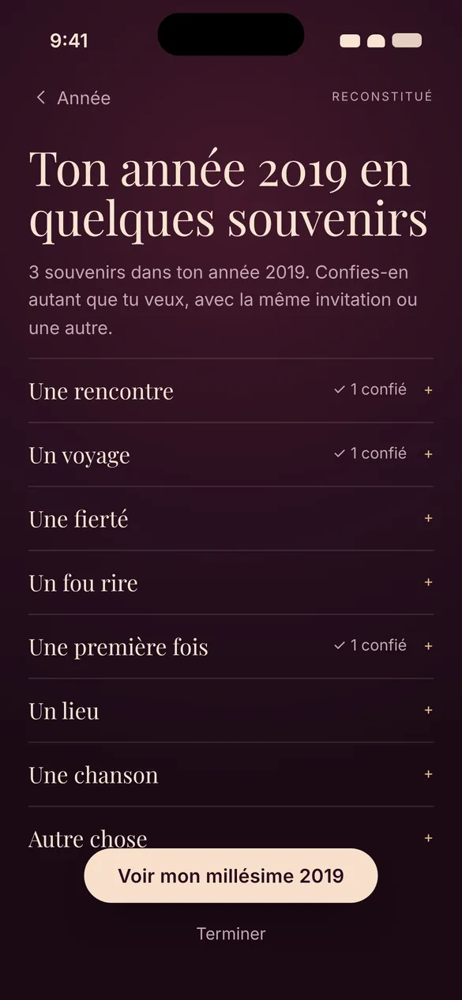
Millésime vit la nuit. Le Jour, ivoire et doré, t’attend si tu le préfères. La cérémonie, elle, se vit toujours dans la nuit.
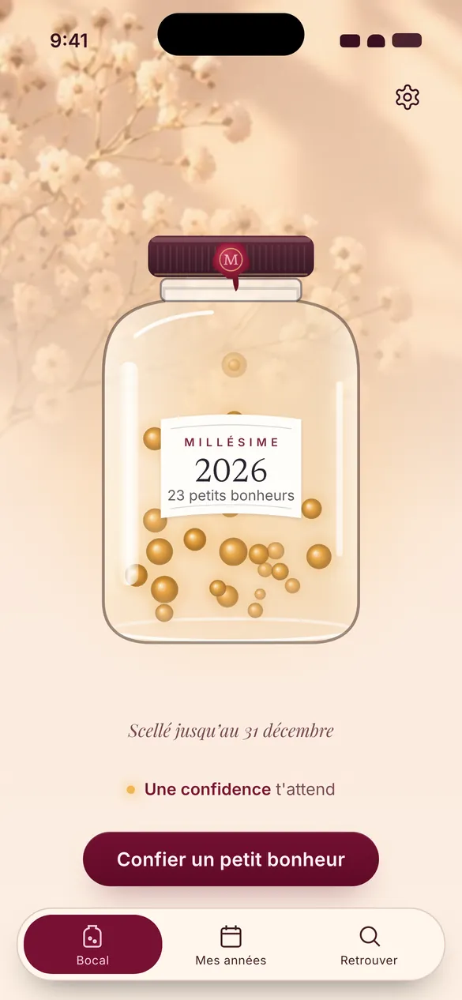
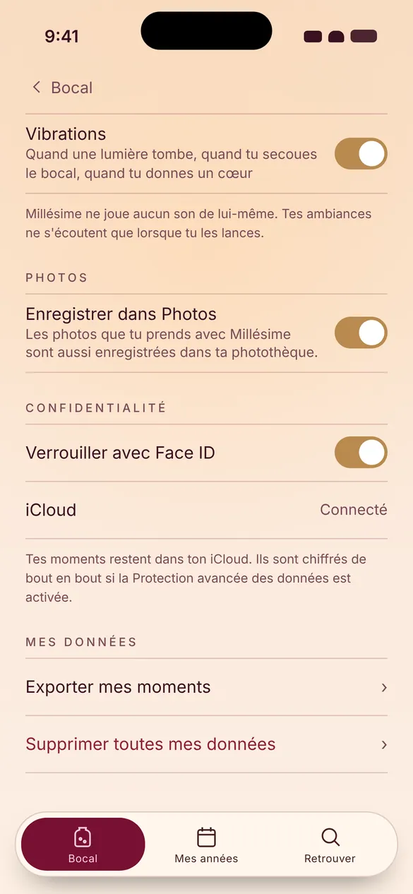
Le 31 décembre, il t’attendra.